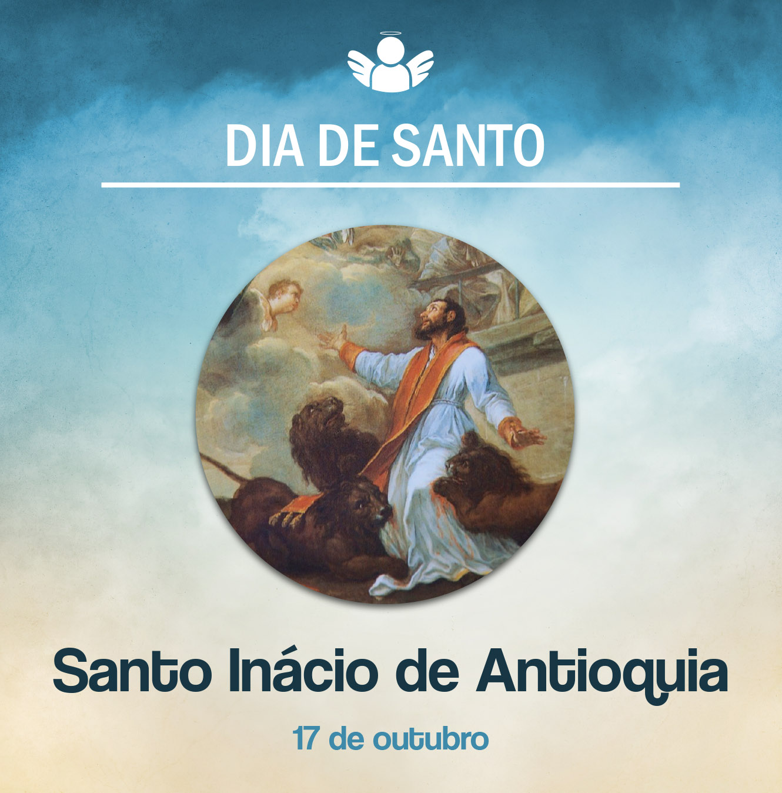

Santo Inácio de Antioquia, bispo e mártir
17 de outubro de, 2020
Celebramos hoje a memória de Santo Inácio de Antioquia. Ele foi bispo de Antioquia, terceira maior cidade do Império Romano, depois de Roma e Alexandria. Essa cidade está situada na Síria, e sua Igreja teve como primeiro bispo o apóstolo Pedro, depois Evódio e, em seguida, Inácio. Essa sucessão se deu no fim do século I e início do século II.
Inácio era um bispo muito dedicado e tinha grande amor a Cristo e à Igreja. Por isso acompanhou as comunidades de cristãos e as formou com grande zelo. Por meio de cartas que eram enviadas às comunidades de Antioquia e outras que conheceu em seu trajeto até Roma, conclamava os cristãos à conversão e a manterem-se em unidade com o seu bispo. Também escreveu ao jovem bispo da cidade de Esmirna, São Policarpo, dizendo “Onde está o bispo, aí está a comunidade; assim como onde está Cristo Jesus, aí está a Igreja Católica”.
No governo de Trajano (98-117), foi condenado e, acorrentado, seguiu para Roma, onde foi martirizado na arena. Morreu devorado pelas feras. Os cristãos das comunidades tentaram intervir, mas ele queria dar seu testemunho dando a própria vida. E dizia: “Deixem-me ser a comida das feras, pelas quais me será dado saborear Deus. Eu sou o trigo de Deus. Tenho de ser triturado pelos dentes das feras, para tornar-me um pão de Cristo”.
E esse homem apaixonado por Cristo e desejoso de encontrá-lo foi venerado pelos cristãos de Antioquia desde a Antiguidade. A partir do século IV, a Igreja passou a celebrar a sua memória em 17 de outubro.
Que luzes nos deixa esse santo para nossa vida hoje? Como cristãos, somos chamados a dar testemunho-compaixão. Seguir Jesus implica em nós uma mudança de vida, uma conversão e crescer na unidade e amor à nossa Igreja Católica.